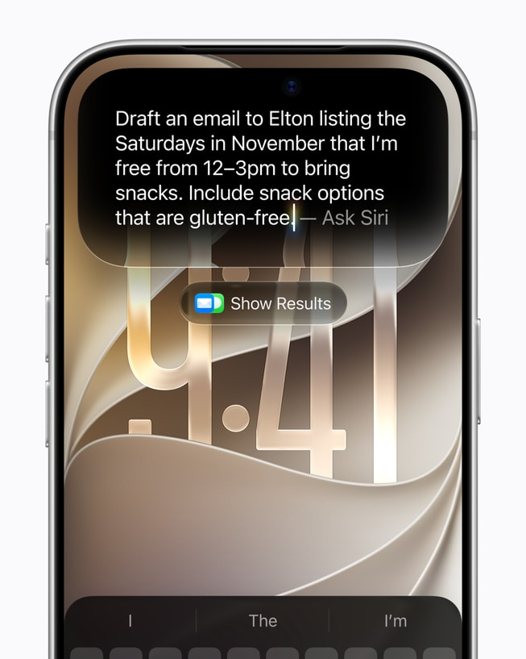

一、导语
9 月 16 日，苹果发布下一代 Apple Intelligence，重构后的 Siri AI 当日起以英文测试版随 2027 软件版本上线，覆盖 iPhone、iPad、Mac、Apple Watch 与 Apple Vision Pro。官方给出的能力清单有四条：个人语境理解、广义世界知识、屏幕感知，以及比以往更多的系统级应用操作。语言扩展排在 10 月——法语、日语、韩语、葡萄牙语、西班牙语。端侧换上了苹果称「迄今最先进」的 AFM Core Advanced 模型，重活继续交给 Private Cloud Compute。
二、背景分析：为什么这次不一样
Siri 上一次被宣布重做是 2024 年，此后多次延期，用户对「即将到来」这四个字已经免疫。这一轮苹果同时动了三处，才让动作看起来不像补丁。
一是入口，唤起方式从一个增加到 五 种；二是记忆，全新的 Siri app 用 iCloud 同步对话历史，把跨设备续聊做成默认能力；三是模型分层，端侧 AFM Core Advanced 负责听写、语音与低延迟对话，生成图片这类重活交给 Private Cloud Compute。竞争压力摆在明面上：同一周 Google DeepMind 发了 Gemini 3.8 Live 与 Gemini 3.8 Live Extended Thinking 两个近实时语音模型，Artificial Analysis 的 Speech to Speech Index 上 GPT-Live-1 以 81.5 分登顶。助手层的战场已经从「能不能听懂」挪到「能不能替你动手」。
三、核心内容：一份能力清单
1. 个人语境 + 屏幕感知
苹果给的例子很具体。用户问「家人提过这次见面想做什么」，Siri 会去消息里翻出「想一起烤家传菜谱」，再从邮件里取回做法，最后把食材加进提醒事项。正在看某支球队官网时问「接下来有哪些主场比赛」，它能直接把赛程建进日历。这套动作的前提是权限与本地索引——苹果的措辞是「个人语境」，不是「把数据传上来」。

2. 一个 Siri app，一段跨设备记忆
对话历史经 iCloud 同步，iPhone 上说一半的话可以在 Mac、iPad、Watch 或 Vision Pro 上接着往下聊。唤起方式的扩张同样明显：除了「嘿 Siri」，iPhone 能按侧边按钮，或从灵动岛下拉；iPad 与 Mac 把 Siri 塞进了 Spotlight，还能 Control-点击系统右键菜单直接问屏幕上的图片、文件或文字；Vision Pro 上，Siri 是一个可以任意摆放的 3D 形象，看它一眼再开口就能唤醒。
3. 端侧模型与视觉智能
语音与系统级听写跑在 AFM Core Advanced 上，支持调节语气和语速，听写会自动处理大小写、标点与排版；在 Mail 和 Messages 里，它还会模仿用户对特定收件人的措辞习惯。Visual Intelligence 从 iPhone 扩到 iPad（直接进截图流程）、Mac（专用键盘快捷键）与 Vision Pro（看着实物提问）。Image Playground 换成跑在 Private Cloud Compute 上的新生成模型，第一次支持照片级真实风格，并宣布支持 SynthID 水印标准——这是苹果在「AI 生成内容可识别」上的正式表态。
4. 顺手改掉的日常应用
Photos 加了 Spatial Reframing，拍完还能调整机位视角，Extend 与 Clean Up 一并加强；Safari 自动按主题归类标签页，Notify Me 盯着补货与降价，还能按描述生成自定义扩展；Shortcuts 支持「描述一下」就生成自动化流程；Mail 的 Smart Reply 会学用户的写作风格；Health 应用改版，Insights 页由 Apple Intelligence 生成摘要，把睡眠、峰值 VO2 max 这类指标转成训练建议。
5. Apple Watch：把 AI 戴在手腕上
今年晚些时候进测试版的一批功能最值得注意。Sound Recognition 靠 S11 芯片的 Secure Exclave 在硬件隔离区处理音频，识别警笛、报警器、门铃、婴儿哭声；Live Rewind 双击数码表冠，调出过去 15 秒对话的文字片段；Siri Recap 在对话结束后自动生成标题与要点；Shazam 音乐识别进智能堆栈。苹果强调这些功能不创建也不存储录音，原始音频连苹果自己也拿不到，且不做说话人归属——Live Rewind 启用时会发出提示音，即便手表处于静音。
四、各方反应
开发者的接入清单已经排开：用 WhatsApp 发消息、在 Audible 播放有声书是现在就能做的；在 Outlook 里起草邮件、在 Notability 里查作业、把餐厅推荐存进 Tripsy 是「即将支持」。对拥有 20 多亿 台活跃设备的公司来说，这套第三方名单本身就是发布的一部分。
质疑同样有基础。Siri 的延期记录摆在那里，测试版首发只支持英文，意味着大多数用户还要等；跨语言扩展的十月窗口也需要验证。苹果自己把隐私当作前提条件来谈：图片生成走 Private Cloud Compute，Siri Recap 只出摘要不出逐字稿，涉及财务信息与政府证件号的内容被主动排除。
同一天还有另一条线索。Anthropic 把 Claude Cowork 与聊天合并成一个 Claude，并推出嵌入对话的 Docs、Slides、Design；OpenAI 在 ChatGPT Ads 里测试 Sponsored Agents。三家在同一周做的是同一件事——把入口收拢回一个对话框。
五、深度解读：助手即操作系统
这次不是加功能，是换一层。三件事值得盯。
第一，设备数量的意义。五 种形态共用一段对话历史，苹果实际卖的是「同一段记忆在多个屏幕上可用」，这是纯云端助手没有的硬件组合。
第二，隐私既是护城河也是枷锁。端侧 AFM Core Advanced、Private Cloud Compute 与 Secure Exclave 让「不上传」能成为卖点，代价是能力上限定在端侧模型与私有云算力里，追平纯云语音模型的速度会更慢。
第三，手表成了新战场。Sound Recognition、Live Rewind、Siri Recap 说明苹果认定可穿戴是环境智能的落点，而这个场景眼镜与耳机厂商同样在抢。
风险也清楚：测试版质量、跨语言进度，以及「记录身边对话」一旦出现负面案例，隐私叙事会反噬得比功能上线更快。
六、总结
苹果用两年时间把 Siri 从功能改成了平台，又用五台设备的同步记忆划出一条不好抄的线——助手层的竞争重心，正从模型分数转向谁掌握上下文、谁离你的手腕更近。
「Siri AI 是一个能力明显更强的对话式助手，具备个人语境理解、广义世界知识、屏幕感知，以及比以往更多的系统级应用操作。」